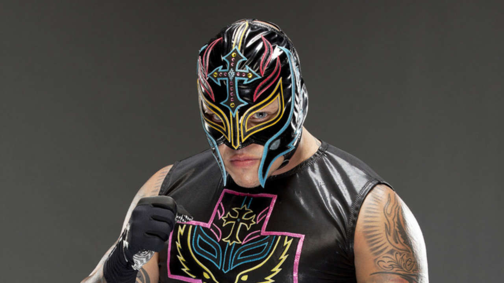
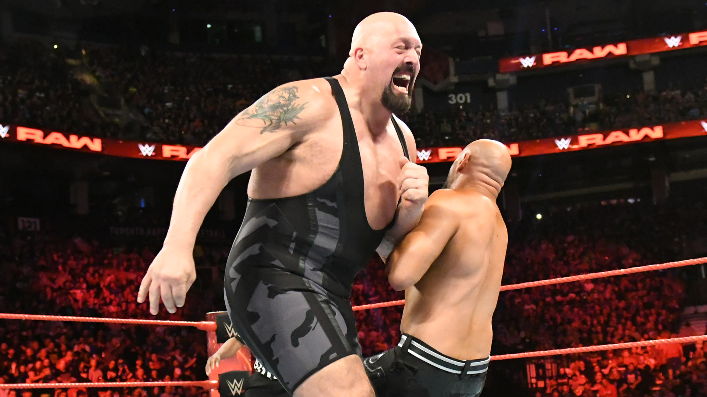
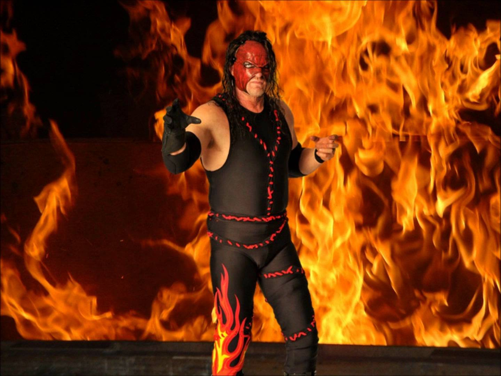

Flair é oficialmente reconhecido pela WWE, TNA e Pro Wrestling Illustrated como 16 vezes campeão mundial (oito vezes Campeão Mundial dos Pesos-Pesados da NWA, seis vezes Campeão Mundial dos Pesos-Pesados da WCW e duas vezes Campeão Mundial dos Pesos-Pesados da WWF). O real número de reinados mundiais variam de acordo com a fonte, indo de 16 até 25 títulos.
4 - Rey Mysterio

Óscar Gutiérrez Rubio
Nascimento:
Gutiérrez iniciou sua carreira profissional em 1992, na promoção mexicana Asistencia Asesoría y Administración (AAA), onde permaneceu por três anos. Após, ingressou na Extreme Championship Wrestling (ECW) e posteriormente, na World Championship Wrestling (WCW), onde foi conhecido como Rey Mysterio, Jr. Porém, quando assinou contrato com a World Wrestling Entertainment (WWE), em 2002, ele retirou o "Jr." de seu nome.
3 - Big Show

Paul Donald Wight
Nascimento:
Ao longo de sua carreira, Wight foi campeão mundial sete vezes. Ele ganhou o WCW World Heavyweight Championship por duas vezes, o WWF/E Championship duas vezes, o ECW World Heavyweight Championship uma vez e o World Heavyweight Championship duas. Ele é o único lutador a ter conquistado todos esses quatro títulos.[8] Wight também ganhou uma vez o Intercontinental Championship e o United States Championship, e três vezes o Hardcore Championship. Wight também já conquistou 11 campeonatos de duplas. Ele ganhou o WWE Tag Team Championship cinco vezes (duas vezes com The Undertaker, e uma vez cada um com Kane, Chris Jericho e The Miz) o World Tag Team Championship três vezes (uma vez cada um com Jericho, Miz, e Kane), e o WCW World Tag Team Championship três vezes (uma vez cada um com Lex Luger, Sting e Scott Hall.
2 - Kane

Glenn Thomas Jacobs
Nascimento:
é um lutador de wrestling profissional e ator espânico-americano. Ele atualmente trabalha para a WWE, no programa SmackDown. No Ultimat, trabalhou como Unabomb onde ganhou o SMW Tag Team Championship como parte do The Dynamic Duo, e na United States Wrestling Association ganhou o USWA Heavyweight Championshp sob o nome de Doomsday. Mais tarde, se juntou a sua atual promoção, World Wrestling Federation (que em 2001 se tornou World Wrestling Entertainment) em 1995, onde lutou como vários personagens, estreando como seu atual Kane em 1997 em uma luta entre The Undertaker e Shawn Michaels no pay-per-view (Bad Blood-Heel in a Cell match) onde Kane invade a luta estourando a porta de aço e aplicando um Tombstone Piledriver em The Undertaker dando a vitoria para Shawn Michaels.
1 - The Undertaker
Mark William Calaway
Nascimento: 24 de março de 1965
Ele possui um recorde de vitórias na WrestleMania, o principal pay-per-view da WWE, com 23 vitórias e duas derrotas (sendo invicto por 21 WrestleManias consecutivas). Durante sua carreira, Calaway foi oito vezes campeão mundial, tendo ganho o WWF/E Championship quatro vezes e o World Heavyweight Championship três vezes , e o USWA Unified World Heavyweight Championship uma vez sendo conhecido naquela época como Master of Pain. The Undertaker também ganhou sete títulos de duplas: seis vezes o WWF Tag Team Championship e uma vez o WCW Tag Team Championship. The Undertaker foi o vencedor do Royal Rumble de 2007, se tornando a primeira pessoa a entrar por último na luta e vencer. Calaway é o único lutador da WWE a ter aparecido no primeiro episódio do Raw ainda em atividade.